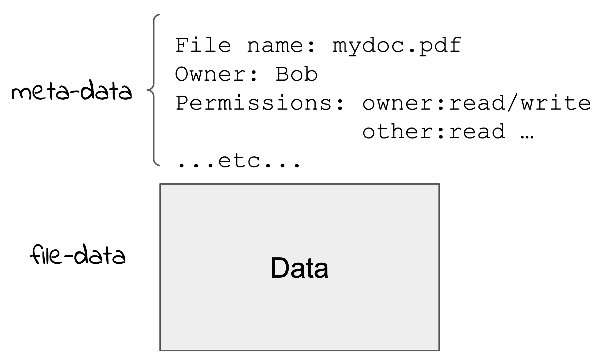

Files¶
Every user of a desktop or server system is familiar with the idea of the file. A file is a way of storing data in some form of mass storage. A key aspect of files is that they store any binary data and so can store any data that is represented in binary: numbers, characters, structured data, instructions etc.
The user interface to access files is usually some pictorial representation of files as folder icons and icons representing the file content. This helps the user build a mental model of the file system and how files are arranged. However, this can be very confusing for some people and give them an incorrect view of what is happening “under the hood”.
To illustrate this there is an old anecdote that describes a user that had filled their desktop screen with file icons. When the system detected that the disk was almost full it popped up a message saying “Low space - cleanup now”. The user responded by rearranging the icons so there was more room on the desktop. The user did not understand how the files were stored and that the desktop interface was a graphical representation only.
In the following description please try and forget your mental model as described by the user interface.
The mass storage devices we attach to computers are implemented with varying technology. The majority (in 2021) use some form of rotating magnetic disk that has binary data recorded on it. New systems use solid state or “silicon” storage which is a like the main memory only larger, cheaper and (importantly) persistent, that is you can turn it off and when you turn it on again the data is retained. We’ll discuss how the data is arranged on the disk later, but we just think of the data of a file stored in an area on the disk as a sort of “blob”.
If that’s all we had, blobs of data on the disk, we would have to refer to our files by the location on the disk. We would have to request that your program read the disk starting at location X for Y bytes. In the early days of computing this is exactly how mass storage was used. This is not very convenient when you start to get a lot of “blobs”! The solution was to store, somewhere else on the disk, a table of names and associated disk locations. Now we can refer to the file by the name and have the system lookup the table and find the location on disk. The table entry for a file is an example of something we call “meta-data”, ie data about data. In this case it is the name of the file.
The key idea is that the data about the file (meta-data) is stored separately from the file data.
We can store more information about the file in meta-data. For example, in a multi-user system we store details of the owner of the file along with information about what users are allowed to access the file (read, write etc).
{kind=link}
Another important type of meta-data helps us to arrange the file data into “folders” or “directories”. Directories are simply lists of file or sub-directory names and the parent directory.
The usual user interface to files and directories on a desktop system consists of a graphical view with icons to represent files and directories. Clicking on a directory icon replaces it with the display of icons representing the contents of the directory.